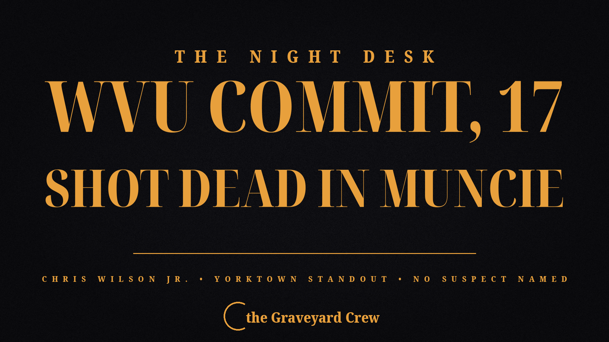

October 05, 2026
Chris Wilson Jr., 17 — Yorktown football star and West Virginia commit — killed in Muncie shooting

Headline card by The Night Desk; photo of Chris Wilson Jr. via WV Sports Nation (Hayes Fawcett)
Chris Wilson Jr., 17 — Yorktown football star and West Virginia commit — killed in Muncie shooting
MUNCIE, Ind. — A 17-year-old high school football star with a West Virginia commitment was shot and killed in the early morning hours of Monday, Oct. 5, shaking a community that had watched him play his final season just days ago.
Christopher Wilson Jr., a senior at Yorktown High School and one of the top-rated recruits in Indiana, was found dead inside a vehicle in the 1400 block of East Cromer Avenue, according to Muncie Police Deputy Chief Melissa Criswell. Delaware County emergency dispatchers received a report of a shooting at 2:59 a.m. Monday. Wilson had been shot multiple times.
Wilson was widely considered the highest-rated football recruit in East Central Indiana — a 6-foot-5, 235-pound defensive end ranked a four-star prospect by On3 Sports and 247 Sports, and No. 153 nationally by Rivals. He committed to West Virginia on June 11, choosing the Mountaineers over offers from Auburn, Cincinnati, Indiana, Purdue, Texas A&M, Kentucky, Ole Miss, Missouri, Vanderbilt, Wisconsin, and several others.
Through five games of his senior season, he had 12 tackles, two tackles for loss, a sack, and four quarterback hurries. As a junior he tallied 25 tackles, seven for loss, four sacks, and 11 quarterback hurries. Yorktown defeated Greenfield-Central 38-0 on Friday night in his final game.
"He was a great football player, but an even better friend and teammate," Yorktown head coach Mike Wilhelm said. "He was highly respected because he treated others with love and kindness. Uncommonly, he never sought out the attention that came with being a high Division-1 football recruit. He showed up every day and worked hard to get better. Our team has lost a brother, and we will carry him with us forever."
In a message to Yorktown families, Principal Stacey Brewer wrote that the family had given permission to share the news: "Chris was a valued member of our school, our football team, and our community. Our hearts are with his family, friends, and teammates."
Investigation ongoing
Muncie police are leading the investigation. As of Monday, police had not publicly identified a suspect and had not announced a motive. Yorktown police confirmed there is no threat to students or schools. Yorktown schools are on fall break this week; counselors will be available to students when classes resume.
Anyone with information is asked to contact the Muncie Police Department detective division at 765-747-4867.
This is a developing story. The Night Desk will update as police release more information.
Source: USA Today — read the original report
← Back to latest stories